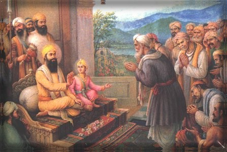
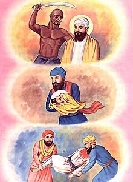

Sikhism


Guru Teg Bahadur ji

Kashmiri Brahmins, led by Pundit Kirpa Ram came to Guru Tegh Bahadur at Anandpur in 1675 for protection against atrocities of Aurungzeb. They had faced stiff taxes, atrocities, cruelty under muslim Mughal governor of Kashmir. Honour of their daughters was being lost and they were losing their religion to the fanatic zeal and proletyzation activities of Islamic crusaders. They asked for a solution. Guru replied "Such activities can only be stopped by a sacrifice of a great person". Just then 8 years old son of Guru Tegh Bahadur Gobind Rai (Later Gobind Singh) came along and saw his father in deep thoughts. He enquired about the reason. He offered a possible solution by saying "who else is greater then you, O father". Guru Tegh Bahadur knew immediately about his Dharma. He told Kashmiri Brahmins "Go tell Aurungzeb that if they can convert your Guru then you will all become Muslims." Kirpa Ram obliged and Aurungzeb issued summons for Guru. Guru performed the ceromany and declared that next Guru will be his son, Gobind Rai. His three devoted disciples, Dyal Dass, Sati Dass and Mati dass insisted on going along with him, he agreed.
At Delhi 5-11, November, 1675
Aurungzeb had gone south, on his arrival to Delhi he demanded Guru ji at capital. (Guru ji were at Sirhind at this time) The faujdar put Guru in an iron cage and fastened it on the back of an elephant. His companions were fettered and handcuffed, and were carried in a bullock cart to delhi. They reached delhi on Nov 5 1675, and were kept at Kotwali jail.
Aurungzeb's pressure tactics:
Syed Mohammad Latif writes: "The emperor had many religious disputations with Tegh Bahadur, and asked him to show miracles, if he was true guru, or to embrace Islam." The Guru replied that showing a miracle was to interfere in the work of God which was wholly improper. As for embracing Islam he considered his religion as good as Islam, and therefore the change of religion was not necessary. The emperor ordered that Guru be put to the severest tortures. After five day's persecution on 10th November, the most heinous and most horrible scene was enacted before the eyes of Guru who was kept in the iron cage. Aurungzeb thought that the sight of such ghastly deeds might force the Guru to change his mind for embracing Islam.
Sawing, bowling and chopping off:
Dyal Das, Mati Das and Sati Das as well as the Guru were brought to the open space in front of the Kotwali where now stands a fountain. (Mati Das and Sati das were brothers, they were former Brahmins and belong to the area of Jammu) First of all Bhai Mati das was asked to become a Muslaman. He replied that Sikhism was true and Islam was false. If God had favoured Islam, he would have created all men circumised. He was at once tied between two posts, and while standing erect, was sawn across from head to loins. He faced the savage operation with such compusure tranquility and fortitude that Sikh theologians included his name in the daily prayers (Ardas). Dyal Das abused the Emperor and his courtiers at this atrocious act. He was tied up like a bundle with an iron chain and was put into large cauldron of bowling oil. He was roasted alive into a block of charcoal. Sati Das condemned the brutalities. He was hacked to pieces limb by limb. Jaita a Rangreta sikh of delhi collected the remains of these martyrs and consigned them to the river Yamuna flowing at a stone's throw.
The Guru's reflections
All this happened before the very eyes of Tegh Bahadur. He was all the time repeating 'Wah Guru'. He remained stonelike unruffled and undismayed. His energy, thoughts, ideas, feelings, and emotions had concentrated on Wah Guru, and dazzling divine light was beaming upon his face. He realized that such immortal sacrifices could not go in vain. Their name would live for ever. In this carnage he saw the rise of a new nation of heroes. Keeping in mind his promise to Kashmiri pandits, the Guru continually chanted the following hymn
The Guru's miracle
Next morning Guru got up early. He bath and sat in meditation. He recited Japji and Sukhmani. He reflected upon the supreme sacrifice of his grandfather, Guru Arjan dev, on the duties of the office of Guruship and on his own responsibility at this crisis. His resolve was made. A little before 11'o clock Guru Tegh Bahadur was brought to open place of execution in Chandni Chauk, where Gurudwara Sis Ganj now stands. The Qazi, several high officials, and the executioner, Sayyid Jalal-Ud-Din of Samana with a shining broad sword in hand was already there. A contigent of Mughal soldiers stood on guard. A large crowd of spectators had gathered outside the barricade. The Guru stood in front. The Qazi asked him either to show miracle, or Embrace Islam or face death. Shaheedi of Nanak 9 Syed Mohammad Latif writes: " The Guru said before the assembly of Omerahas that the duty of man was to pray to the Lord, but since he had been commanded by his majesty to show a miracle, he had resolved upon complying with the King's order. He wrote on a piece of paper, which he said was charmed, and then having tied it round his neck declared that the sword would fall harmless on it. The executiner was now summoned to test the miraculous charm. The blow was given and the head of the Guru rolled on the floor to the amazement of court." (Latif, page 260, History of PunjaB, he is famous for anti Sikh writings so please don't get offended with above)
Display in Delhi
After the execution Guru's head and body were placed on the back of an elephant and paraded into the streets and bazars of Delhi. They were kept at the Kotwali in Chandni Chauk after demonstrations. Aurungzeb then ordered that parts of his body be imputated and hung about the city. "Wajudash ra chand hisse namudah atraf-e-shahar-awezand" A desperate struggle
Jaita and Nanu, residents of Dilwali Gali in the city, held a meeting in the house of Nanu. They were joined by Uda, a resident of Ladwa in Karnal district. They resolved that such a thing should not happen. It was suggested that Lakhi Lubana was shortly to arrive with a few cartloads of cotton from Narnaul. He was a Sikh and his guidance was sought. They waited for Lakhi on the road a few kilometrs away from the city. They informed him about the whole affair. It was decided that carts should be diverted from the side of the Red fort to Chandani chauk about midnight on Nov 11/12 1675 A.D. Near Kotwali the speed of the carts would be slowed down without stopping them. The head and body lay at the gate. The watchmen wrapped in quilts were inside. Jaita slipped out quickly, picked up the head and fled away towards Sabzi Mandi. He tied the head in a sheet, fastened it on his back and covered his body in an old, dirty blanket. He made straight for Azadpur on the road to Sonepat. Nanu and Uda kept him company at a distance.
The effect of Guru's martyrdom
Hindus, Sikhs and Sufi Muslims in the Panjab were deeply shocked at the execution of the Guru and his three brave companions. They were filled with indignation. A Sikh even made an attempt on Aurungzeb's life. On Friday, 27 October, 1676, the emperor returned from Jama Masjid. He went for an airing in a boat in river Yamuna. When he alighted the boat and was about to get on the movable throne (Takht-e-rawan) "an ill-fated disciple of Guru Tegh Bahadur" threw two bricks on the emperor, one of which hit the throne. (Saqi Must-Id-Khan, Masir-e-Alamgiri translation by sir Jadunath Sarkar. page 94) Guru Tegh Bahadur's execution turned the tide of history of the Sikhs and of Panjab. His son and successor Guru Gobind singh reflected on the history of India as well as on the history of the Sikhs. Guru Nanak had described the rulers of his time as tigers and dogs. His great Grandfather, the fifth Guru, Arjan, was executed at Lahore. His grandfather Guru Hargobind, had been imprisoned in the Gwalir fort for twelve years. His father was beheaded simply because he happened to be the head of a religious body. There had been no change in the attitude of rulers as described by Guru Nanak even after two hundred years. After a most determined meditation on this state of affairs, the Guru came to the conclusion that if the king was bad, people must rise in revolt. The greatest need of the time was to create a national army. Such an army was to be based on social justice. There should be no discrimination in the name of caste, creed or colour. The unpaid, unequipped and untrained army was to be inspired by feelings of patriotism and nationalism. This objective was achieved by creation of Khalsa. The down trodden people who had lived for centuries under complete servility turned into doughty warriors. In the course of one hundred years they not only ended the foreign rule but also put a stop for ever to the foreign invasions from the North-West.
